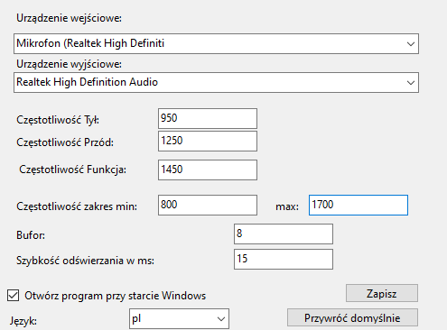
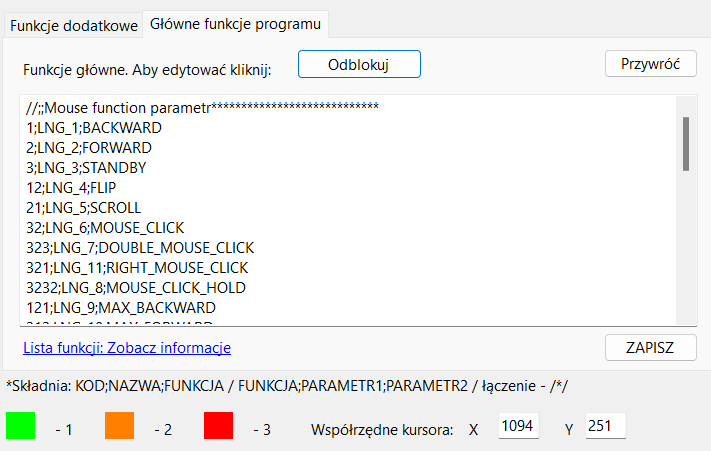

Ustawienia:

Ważne funkcje które należy omówić to:
- Bufor – liczba ta określa ilość zarejestrowanych częstotliwości które muszą być w jednym zakresie aby zadziałała funkcja. Domyślna liczba to 8.
- Szybkość odświeżania w ms – szybkość z jaką następuje ponowne zarejestrowanie częstotliwości.
Funkcje: (lista funkcji w zakładce LISTA FUNKCJI)

Każda funkcja to 1 linijka.
Składnia jest następująca:
KOD;NAZWA;FUNKCJA
(parametry oddzielone średnikiem)
np.:
1 ; nazwa (dowolna) lub stała np.: (LNG_1 – w zależności od wybranego języka) ; BACKWARD
LUB
FUNKCJA ; PARAMETR ; PARAMETR
(lista funkcji w zakładce „Lista Funkcji”)
Funkcje można łączyć znakami /*/ np.:
32;NAZWA;FLIP/*/FLIP – spowoduje podwójne wywołanie funkcji